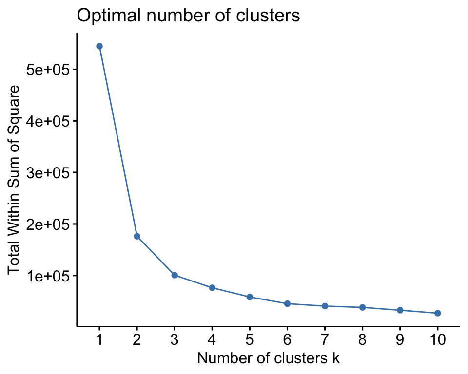

Capítulo 7 Clustering
7.1 Fundamentos
7.1.1 Medidas de similaridad
Los métodos matemáticos en la que descansan las técnicas de clustering están basados en la búsqueda de patrones de similaridad/disimilaridad en los datos.
Dado un conjunto de valores de un dominio, las medidas de disimilariad son funciones que asignan valores reales a pares de instancias del dominio.
Estas funciones se usan o bien en la formación del cluster (grupos iniciales) o el proceso de modelización del cluster (grupos evolucionan). Estos algoritmos se denominan algoritmos de clustering basados en similaridad o más bien disimilaridad.
Las funciones de similaridad/disimilaridad miden y expresan numericamente el grado en el que dos instancias del mismo dominio (descritas por un conjunto de atributos) sin similares/disimilares unas de otras.
Se podrían clasisificar en:
- Basadas en diferencias: transforman y agregan de alguna forma las diferencias para cada dos instancias comparadas.
- Basadas en correlaciones: detectan patrones comunes de los valores inferiores y superiores de los atributos para cada dos instancias de valores.
7.1.2 Disimilaridad basada en diferencias
Dadas dos instancias \(x_1,x_2\) con un conjunto de atributos \(a_i\), estas medidas devuelven una matriz con la distancia existente entre cada par de atributos en cada una de las instancias.
Distancias a usar para calcular la matriz:
- Distancia euclidea: \(d_{euc}=\mid \mid x-y \mid\mid_2\)
- Distancia de Manhattan: \(d_{euc}=\displaystyle \sum_{i=1}^n \mid (x_i-y_i)\mid\)
- Distancia de Minkowski:
- Distancia de Canberra
- Distancia de Chebysehv
- Distancia de Hamming
7.1.3 Matriz de distancias
library(cluster)
library(factoextra)
data("USArrests")
usa_arrests <- na.omit(USArrests)
dist_euc <- get_dist(usa_arrests)
fviz_dist(dist_euc)La función get_dist por defecto calcula la distancia euclídea pero soporta otras funciones distancia.
7.1.4 Similaridad basada en correlaciones
A veces debemos tener en cuenta que dos instancias son similares según el conocimiento del dominio más que en los valores de los atributos.
Si atributos representan frecuencias de eventos, cuentas de frecuencias de palabras en textos. Las diferencias que importan más que cuantitativas son discretas: alto, bajo, etc.
Medidas:
- Correlación de Pearson
- Correlación de Spearman
- Similaridad del coseno
7.2 Clustering en R
Clustering es una técnica de aprendizaje no supervisado.
Se introduce el número de grupos (clusters) a identificar. Algoritmo:
El algoritmo debe garantizar la convergencia.
7.2.1 Centros
Clustering es muy sensible a la elección inicial de los centros. Y es un algoritmo muy exigente en recursos.
Para calcular las distancias de puntos a centros se usa:
Métodos de clustering
7.2.2 Objetivo
Dado un dataset \(D=\{x_1,x_2, \ldots,x_n\}\) donde \(x_i\) denota las filas y con \(m\) atributos \(A_i\) en las columnas tal que cada fila \(x_i=\{a_1,a_2,\ldots,a_m\}\) con \(a_k\) una valor del atributo \(A_k\).Los métodos de clustering agrupan la población del dataset (las filas) en \(k\) grupos (clusters) con \(k \leq n\).
7.2.3 k-means
Características:Algoritmo:
Algoritmo debe garantizar la convergencia.
El método k-means agrupa el dataset en \(k\) grupos distintos \(S=\{S_1,\ldots,S_k\}\) minimizando la media interna de la suma de cuadrados.
\[min_{S}\sum_{j=1}^k\sum_{x_j\in S_j}\mid\mid x_i -\overline{m_j}\mid\mid^2\] donde \(\overline{m_j}\) es el vector media de los \(m\) atributos promediado en todas las filas del cluster y \(\mid\mid x_i -\overline{m_j}\mid\mid^2= \sum_{r=1}(x_r - m_r)^2\) (suma de las diferencias al cuadrado de los \(m\) atributos - distancia euclidea entre los vectores de cada grupo y la media)
7.3 Número optimo de clusters
7.3.1 Proyecto - dataset USArrests
We can compute k-means in R with the kmeans function. Here will group the data into two clusters (centers = 2). The kmeans function also has an nstart option that attempts multiple initial configurations and reports on the best one. For example, adding nstart = 25 will generate 25 initial configurations. This approach is often recommended.
List of 9 $ cluster : Named int [1:50] 1 1 1 1 1 1 2 1 1 1 … ..- attr(, “names”)= chr [1:50] “Alabama” “Alaska” “Arizona” “Arkansas” … $ centers : num [1:2, 1:4] 11.86 4.84 255 109.76 67.62 … ..- attr(, “dimnames”)=List of 2 .. ..$ : chr [1:2] “1” “2” .. ..$ : chr [1:4] “Murder” “Assault” “UrbanPop” “Rape” $ totss : num 355808 $ withinss : num [1:2] 41637 54762 $ tot.withinss: num 96399 $ betweenss : num 259409 $ size : int [1:2] 21 29 $ iter : int 1 $ ifault : int 0 - attr(*, “class”)= chr “kmeans”
We can also view our results by using fviz_cluster. This provides a nice illustration of the clusters. If there are more than two dimensions (variables) fviz_cluster will perform principal component analysis (PCA) and plot the data points according to the first two principal components that explain the majority of the variance.

Alternatively, you can use standard pairwise scatter plots to illustrate the clusters compared to the original variables.
7.3.2 Tamaño optimal de clusters
Una forma sencilla de estimar el número K óptimo de clusters cuando no se dispone de información adicional en la que basarse es aplicar el algoritmo para un rango de valores de K, identificando aquel a partir del cual la reducción en la suma total de varianza intra-cluster deja de ser sustancial (en las siguientes secciones se describen otras alternativas). La función fviz_nbclust() automatiza este proceso. En este caso, dado que se sospecha de la presencia de outliers, se emplea la distancia de Manhattan como medida de similitud.
A partir de 4 clusters la reducción en la suma total de cuadrados internos parece estabilizarse, indicando que K = 4 es una buena opción.
7.4 Clustering jerárquico
7.4.1 Proyecto dataset protein
Country RedMeat WhiteMeat Eggs Milk Fish Cereals Starch Nuts Fr.Veg| RedMeat | WhiteMeat | Eggs | Milk | Fish | Cereals | Starch | Nuts | Fr.Veg |
|---|---|---|---|---|---|---|---|---|
| 10.1 | 1.4 | 0.5 | 8.9 | 0.2 | 42.3 | 0.6 | 5.5 | 1.7 |
| 8.9 | 14.0 | 4.3 | 19.9 | 2.1 | 28.0 | 3.6 | 1.3 | 4.3 |
| 13.5 | 9.3 | 4.1 | 17.5 | 4.5 | 26.6 | 5.7 | 2.1 | 4.0 |
| 7.8 | 6.0 | 1.6 | 8.3 | 1.2 | 56.7 | 1.1 | 3.7 | 4.2 |
| 9.7 | 11.4 | 2.8 | 12.5 | 2.0 | 34.3 | 5.0 | 1.1 | 4.0 |
| 10.6 | 10.8 | 3.7 | 25.0 | 9.9 | 21.9 | 4.8 | 0.7 | 2.4 |
| 8.4 | 11.6 | 3.7 | 11.1 | 5.4 | 24.6 | 6.5 | 0.8 | 3.6 |
| 9.5 | 4.9 | 2.7 | 33.7 | 5.8 | 26.3 | 5.1 | 1.0 | 1.4 |
| 18.0 | 9.9 | 3.3 | 19.5 | 5.7 | 28.1 | 4.8 | 2.4 | 6.5 |
| 10.2 | 3.0 | 2.8 | 17.6 | 5.9 | 41.7 | 2.2 | 7.8 | 6.5 |
| 5.3 | 12.4 | 2.9 | 9.7 | 0.3 | 40.1 | 4.0 | 5.4 | 4.2 |
| 13.9 | 10.0 | 4.7 | 25.8 | 2.2 | 24.0 | 6.2 | 1.6 | 2.9 |
| 9.0 | 5.1 | 2.9 | 13.7 | 3.4 | 36.8 | 2.1 | 4.3 | 6.7 |
| 9.5 | 13.6 | 3.6 | 23.4 | 2.5 | 22.4 | 4.2 | 1.8 | 3.7 |
| 9.4 | 4.7 | 2.7 | 23.3 | 9.7 | 23.0 | 4.6 | 1.6 | 2.7 |
| 6.9 | 10.2 | 2.7 | 19.3 | 3.0 | 36.1 | 5.9 | 2.0 | 6.6 |
| 6.2 | 3.7 | 1.1 | 4.9 | 14.2 | 27.0 | 5.9 | 4.7 | 7.9 |
| 6.2 | 6.3 | 1.5 | 11.1 | 1.0 | 49.6 | 3.1 | 5.3 | 2.8 |
| 7.1 | 3.4 | 3.1 | 8.6 | 7.0 | 29.2 | 5.7 | 5.9 | 7.2 |
| 9.9 | 7.8 | 3.5 | 24.7 | 7.5 | 19.5 | 3.7 | 1.4 | 2.0 |
| 13.1 | 10.1 | 3.1 | 23.8 | 2.3 | 25.6 | 2.8 | 2.4 | 4.9 |
| 17.4 | 5.7 | 4.7 | 20.6 | 4.3 | 24.3 | 4.7 | 3.4 | 3.3 |
| 9.3 | 4.6 | 2.1 | 16.6 | 3.0 | 43.6 | 6.4 | 3.4 | 2.9 |
| 11.4 | 12.5 | 4.1 | 18.8 | 3.4 | 18.6 | 5.2 | 1.5 | 3.8 |
| 4.4 | 5.0 | 1.2 | 9.5 | 0.6 | 55.9 | 3.0 | 5.7 | 3.2 |
| x | |
|---|---|
| Eggs | 3 |
| Nuts | 3 |
| Fish | 4 |
| Starch | 4 |
| Fr.Veg | 4 |
| WhiteMeat | 8 |
| RedMeat | 10 |
| Milk | 17 |
| Cereals | 32 |
| x | |
|---|---|
| Eggs | 1.1 |
| Starch | 1.6 |
| Fr.Veg | 1.8 |
| Nuts | 2.0 |
| RedMeat | 3.3 |
| Fish | 3.4 |
| WhiteMeat | 3.7 |
| Milk | 7.1 |
| Cereals | 11.0 |
List of 9 $ cluster : int [1:25] 3 2 1 3 2 2 2 3 1 3 … $ centers : num [1:3, 1:2] 9 12.06 4.66 15.18 8.84 … ..- attr(, “dimnames”)=List of 2 .. ..$ : chr [1:3] “1” “2” “3” .. ..$ : chr [1:2] “WhiteMeat” “RedMeat” $ totss : num 596 $ withinss : num [1:3] 35.7 39.5 69.9 $ tot.withinss: num 145 $ betweenss : num 451 $ size : int [1:3] 5 8 12 $ iter : int 3 $ ifault : int 0 - attr(, “class”)= chr “kmeans” K-means clustering with 3 clusters of sizes 5, 8, 12
Cluster means: WhiteMeat RedMeat 1 9.000000 15.180000 2 12.062500 8.837500 3 4.658333 8.258333
Clustering vector: [1] 3 2 1 3 2 2 2 3 1 3 2 1 3 2 3 2 3 3 3 3 1 1 3 2 3
Within cluster sum of squares by cluster: [1] 35.66800 39.45750 69.85833 (between_SS / total_SS = 75.7 %)
Available components:
[1] “cluster” “centers” “totss” “withinss” “tot.withinss” [6] “betweenss” “size” “iter” “ifault”[1] 3 9 12 21 22 2 5 6 7 11 14 16 24 1 4 8 10 13 15 17 18 19 20 23 25 food.Country.Gr1. grpMeat.cluster.Gr1. 1 Belgium 1 2 France 1 3 Ireland 1 4 Switzerland 1 5 UK 1 6 Austria 2 7 Czechoslovakia 2 8 Denmark 2 9 E Germany 2 10 Hungary 2 11 Netherlands 2 12 Poland 2 13 W Germany 2 14 Albania 3 15 Bulgaria 3 16 Finland 3 17 Greece 3 18 Italy 3 19 Norway 3 20 Portugal 3 21 Romania 3 22 Spain 3 23 Sweden 3 24 USSR 3 25 Yugoslavia 3  food.Country.Gr1. grpProtein.cluster.Gr1. 1 Belgium 1 2 France 1 3 Ireland 1 4 Switzerland 1 5 UK 1 6 Bulgaria 2 7 Romania 2 8 Yugoslavia 2 9 Denmark 3 10 Finland 3 11 Norway 3 12 Sweden 3 13 Czechoslovakia 4 14 Hungary 4 15 Poland 4 16 Portugal 5 17 Spain 5 18 Albania 6 19 Greece 6 20 Italy 6 21 USSR 6 22 Austria 7 23 E Germany 7 24 Netherlands 7 25 W Germany 7 [1] “dist”
| 1 | 2 | 3 | 4 | 5 | 6 | 7 | 8 | 9 | 10 | 11 | 12 | 13 | 14 | 15 | 16 | 17 | 18 | 19 | 20 | 21 | 22 | 23 | 24 | 25 |
|---|---|---|---|---|---|---|---|---|---|---|---|---|---|---|---|---|---|---|---|---|---|---|---|---|
| 0.00000 | 23.176281 | 21.650173 | 15.688212 | 15.154537 | 30.157586 | 22.865914 | 30.99097 | 23.174124 | 12.136309 | 13.157127 | 27.902509 | 10.624500 | 28.302120 | 26.805410 | 17.643979 | 23.111036 | 10.319399 | 17.149927 | 29.987998 | 24.928899 | 24.308435 | 11.034038 | 29.143953 | 15.474818 |
| 23.17628 | 0.000000 | 7.868291 | 32.304489 | 10.305338 | 11.956588 | 10.742905 | 17.42125 | 11.010904 | 19.529721 | 16.974982 | 10.039422 | 14.688771 | 6.763875 | 13.684663 | 9.942334 | 22.931202 | 25.261235 | 17.440183 | 13.032268 | 7.583535 | 12.920526 | 19.042846 | 10.131634 | 31.946987 |
| 21.65017 | 7.868291 | 0.000000 | 32.786125 | 10.609901 | 11.119802 | 8.928606 | 17.60312 | 6.007495 | 18.254862 | 18.784036 | 9.146584 | 13.568714 | 9.675743 | 10.803703 | 12.201639 | 19.200781 | 25.878563 | 13.916537 | 11.632283 | 7.525955 | 6.830081 | 18.416840 | 9.066422 | 32.684859 |
| 15.68821 | 32.304489 | 32.786125 | 0.000000 | 24.005416 | 40.334105 | 33.614729 | 40.33510 | 33.263494 | 19.315538 | 18.399185 | 38.359744 | 21.013329 | 38.526744 | 38.174730 | 24.493877 | 33.293843 | 8.334867 | 28.887367 | 41.480598 | 35.509013 | 36.419500 | 16.675431 | 40.619823 | 4.875449 |
| 15.15454 | 10.305338 | 10.609901 | 24.005416 | 0.000000 | 19.420608 | 10.613670 | 24.01999 | 13.435029 | 15.025645 | 9.179869 | 17.582093 | 8.705171 | 16.352676 | 18.727253 | 8.255301 | 19.060430 | 17.311557 | 13.070578 | 20.430370 | 14.971640 | 16.497273 | 12.635268 | 17.151385 | 23.977698 |
| 30.15759 | 11.956588 | 11.119802 | 40.334105 | 19.420608 | 0.000000 | 15.184532 | 12.24990 | 12.718490 | 24.466099 | 26.734809 | 8.938121 | 21.595833 | 8.360024 | 6.688049 | 17.813759 | 23.926972 | 33.292191 | 21.187732 | 4.795832 | 9.650389 | 11.740528 | 25.334759 | 9.901010 | 39.874177 |
| 22.86591 | 10.742905 | 8.928606 | 33.614729 | 10.613670 | 15.184532 | 0.000000 | 23.82751 | 13.855324 | 22.109274 | 17.517991 | 16.177763 | 15.622740 | 13.268760 | 14.985326 | 14.874811 | 15.156187 | 26.731629 | 11.784312 | 15.584287 | 14.647184 | 14.780054 | 21.369137 | 10.558409 | 33.279423 |
| 30.99097 | 17.421251 | 17.603125 | 40.335096 | 24.019992 | 12.249898 | 23.827505 | 0.00000 | 18.181309 | 24.107053 | 29.983829 | 11.569356 | 23.755420 | 14.677534 | 11.688028 | 19.358977 | 31.176273 | 33.398054 | 26.571413 | 11.908820 | 13.054118 | 15.951175 | 24.692712 | 18.878824 | 39.330014 |
| 23.17412 | 11.010904 | 6.007495 | 33.263494 | 13.435029 | 12.718490 | 13.855324 | 18.18131 | 0.000000 | 18.254589 | 21.256293 | 10.153325 | 15.157836 | 12.350304 | 13.150285 | 14.013208 | 21.854061 | 27.116969 | 17.215110 | 14.027117 | 8.182298 | 6.987131 | 19.434248 | 12.459936 | 33.723137 |
| 12.13631 | 19.529721 | 18.254862 | 19.315538 | 15.025645 | 24.466099 | 22.109274 | 24.10705 | 18.254589 | 0.000000 | 14.933184 | 22.976510 | 7.976841 | 24.062834 | 21.419617 | 12.358802 | 22.156489 | 13.341664 | 16.268682 | 25.157305 | 20.039960 | 20.320187 | 8.175573 | 26.280411 | 18.747800 |
| 13.15713 | 16.974982 | 18.784036 | 18.399185 | 9.179869 | 26.734809 | 17.517991 | 29.98383 | 21.256293 | 14.933184 | 0.000000 | 25.019193 | 10.702803 | 23.208619 | 25.669437 | 11.992498 | 22.031568 | 11.638728 | 16.165704 | 27.655198 | 22.139557 | 24.172091 | 12.493198 | 24.701012 | 17.615902 |
| 27.90251 | 10.039422 | 9.146584 | 38.359744 | 17.582093 | 8.938121 | 16.177763 | 11.56936 | 10.153325 | 22.976510 | 25.019193 | 0.000000 | 20.037215 | 6.827884 | 10.883014 | 16.008748 | 27.137612 | 31.295687 | 21.806192 | 8.884256 | 5.097058 | 8.241966 | 23.017385 | 9.709789 | 37.953919 |
| 10.62450 | 14.688771 | 13.568714 | 21.013329 | 8.705171 | 21.595833 | 15.622740 | 23.75542 | 15.157836 | 7.976841 | 10.702803 | 20.037215 | 0.000000 | 19.872343 | 18.766726 | 9.066973 | 17.866169 | 14.311184 | 10.910545 | 21.877386 | 16.668833 | 17.261518 | 9.462029 | 21.096682 | 20.721245 |
| 28.30212 | 6.763875 | 9.675743 | 38.526744 | 16.352676 | 8.360024 | 13.268760 | 14.67753 | 12.350304 | 24.062834 | 23.208619 | 6.827884 | 19.872343 | 0.000000 | 11.551623 | 15.336884 | 25.384838 | 31.244840 | 20.661317 | 8.497647 | 6.297619 | 11.987076 | 24.233448 | 6.525335 | 37.969725 |
| 26.80541 | 13.684663 | 10.803703 | 38.174730 | 18.727253 | 6.688049 | 14.985326 | 11.68803 | 13.150285 | 21.419617 | 25.669437 | 10.883014 | 18.766726 | 11.551623 | 0.000000 | 16.913308 | 20.662768 | 31.020638 | 17.575836 | 5.557877 | 10.653638 | 10.523783 | 22.826301 | 12.152366 | 37.451569 |
| 17.64398 | 9.942334 | 12.201639 | 24.493877 | 8.255301 | 17.813759 | 14.874811 | 19.35898 | 14.013208 | 12.358802 | 11.992498 | 16.008748 | 9.066973 | 15.336884 | 16.913308 | 0.000000 | 21.676946 | 17.429859 | 15.496774 | 19.150196 | 13.500370 | 17.070735 | 10.812955 | 18.513238 | 23.728464 |
| 23.11104 | 22.931202 | 19.200781 | 33.293843 | 19.060430 | 23.926972 | 15.156187 | 31.17627 | 21.854061 | 22.156489 | 22.031568 | 27.137612 | 17.866169 | 25.384838 | 20.662768 | 21.676946 | 0.000000 | 27.650859 | 8.788629 | 24.082774 | 24.844517 | 22.770156 | 24.005208 | 22.834842 | 32.829408 |
| 10.31940 | 25.261235 | 25.878563 | 8.334867 | 17.311557 | 33.292191 | 26.731629 | 33.39805 | 27.116969 | 13.341664 | 11.638728 | 31.295687 | 14.311184 | 31.244840 | 31.020638 | 17.429859 | 27.650859 | 0.000000 | 22.286094 | 34.196052 | 28.574464 | 29.726924 | 9.880283 | 33.438600 | 6.910861 |
| 17.14993 | 17.440183 | 13.916537 | 28.887367 | 13.070578 | 21.187732 | 11.784312 | 26.57141 | 17.215110 | 16.268682 | 16.165704 | 21.806192 | 10.910545 | 20.661317 | 17.575836 | 15.496774 | 8.788629 | 22.286094 | 0.000000 | 20.789420 | 19.311396 | 17.655028 | 17.884910 | 19.048097 | 28.132721 |
| 29.98800 | 13.032268 | 11.632283 | 41.480598 | 20.430370 | 4.795832 | 15.584287 | 11.90882 | 14.027117 | 25.157305 | 27.655198 | 8.884256 | 21.877386 | 8.497647 | 5.557877 | 19.150196 | 24.082774 | 34.196052 | 20.789420 | 0.000000 | 9.537819 | 10.903211 | 26.293155 | 9.090105 | 40.833932 |
| 24.92890 | 7.583535 | 7.525955 | 35.509013 | 14.971640 | 9.650389 | 14.647184 | 13.05412 | 8.182298 | 20.039960 | 22.139557 | 5.097058 | 16.668833 | 6.297619 | 10.653638 | 13.500370 | 24.844517 | 28.574464 | 19.311396 | 9.537819 | 0.000000 | 7.969316 | 20.975700 | 9.624968 | 35.278889 |
| 24.30843 | 12.920526 | 6.830081 | 36.419500 | 16.497273 | 11.740528 | 14.780054 | 15.95118 | 6.987131 | 20.320187 | 24.172091 | 8.241966 | 17.261518 | 11.987076 | 10.523783 | 17.070735 | 22.770156 | 29.726924 | 17.655028 | 10.903211 | 7.969316 | 0.000000 | 21.605786 | 11.101802 | 36.405906 |
| 11.03404 | 19.042846 | 18.416840 | 16.675431 | 12.635268 | 25.334759 | 21.369137 | 24.69271 | 19.434248 | 8.175573 | 12.493198 | 23.017385 | 9.462029 | 24.233448 | 22.826301 | 10.812955 | 24.005208 | 9.880283 | 17.884910 | 26.293155 | 20.975700 | 21.605786 | 0.000000 | 26.583454 | 15.791770 |
| 29.14395 | 10.131634 | 9.066422 | 40.619823 | 17.151385 | 9.901010 | 10.558409 | 18.87882 | 12.459936 | 26.280411 | 24.701012 | 9.709789 | 21.096682 | 6.525335 | 12.152366 | 18.513238 | 22.834842 | 33.438600 | 19.048097 | 9.090105 | 9.624968 | 11.101802 | 26.583454 | 0.000000 | 40.275551 |
| 15.47482 | 31.946987 | 32.684859 | 4.875449 | 23.977698 | 39.874177 | 33.279423 | 39.33001 | 33.723137 | 18.747800 | 17.615902 | 37.953919 | 20.721245 | 37.969725 | 37.451569 | 23.728464 | 32.829408 | 6.910861 | 28.132721 | 40.833932 | 35.278889 | 36.405906 | 15.791770 | 40.275551 | 0.000000 |
| id | country |
|---|---|
| 1 | Albania |
| 2 | Austria |
| 3 | Belgium |
| 4 | Bulgaria |
| 5 | Czechoslovakia |
| 6 | Denmark |
| 7 | E Germany |
| 8 | Finland |
| 9 | France |
| 10 | Greece |
| 11 | Hungary |
| 12 | Ireland |
| 13 | Italy |
| 14 | Netherlands |
| 15 | Norway |
| 16 | Poland |
| 17 | Portugal |
| 18 | Romania |
| 19 | Spain |
| 20 | Sweden |
| 21 | Switzerland |
| 22 | UK |
| 23 | USSR |
| 24 | W Germany |
| 25 | Yugoslavia |
[1] 13.07058 [1] 13.07058 [,1] [,2] [1,] -6 -20 [2,] -4 -25 [3,] -12 -21 [4,] -3 -9 [5,] -14 -24 [6,] -15 1 [7,] -22 4 [8,] -10 -13 [9,] -5 -16 [10,] -18 2 [11,] -17 -19 [12,] -2 5 [13,] -23 8 [14,] 3 12 [15,] -11 9 [16,] -1 13 [17,] -7 11 [18,] -8 6 [19,] 7 14 [20,] 15 16 [21,] 18 19 [22,] 17 20 [23,] 10 22 [24,] 21 23 Country RedMeat WhiteMeat Eggs Milk Fish Cereals Starch Nuts Fr.Veg 1 Albania 10.1 1.4 0.5 8.9 0.2 42.3 0.6 5.5 1.7 2 Austria 8.9 14.0 4.3 19.9 2.1 28.0 3.6 1.3 4.3 3 Belgium 13.5 9.3 4.1 17.5 4.5 26.6 5.7 2.1 4.0 4 Bulgaria 7.8 6.0 1.6 8.3 1.2 56.7 1.1 3.7 4.2 5 Czechoslovakia 9.7 11.4 2.8 12.5 2.0 34.3 5.0 1.1 4.0 6 Denmark 10.6 10.8 3.7 25.0 9.9 21.9 4.8 0.7 2.4 cluster 1 1 2 2 3 2 4 3 5 1 6 2
1 2 3 4
7 12 3 3
cluster RedMeat WhiteMeat Eggs Milk Fish Cereals Starch
1 1 8.642857 6.871429 2.385714 14.042857 2.5428571 39.27143 3.742857
2 2 12.091667 9.441667 3.708333 23.000000 4.9916667 24.02500 4.616667
3 3 6.133333 5.766667 1.433333 9.633333 0.9333333 54.06667 2.400000
4 4 7.233333 6.233333 2.633333 8.200000 8.8666667 26.93333 6.033333
Nuts Fr.Veg
1 4.214286 4.657143
2 1.766667 3.491667
3 4.900000 3.400000
4 3.800000 6.233333
[1] RedMeat WhiteMeat Eggs Milk Fish Cereals Starch
[8] Nuts Fr.Veg
<0 rows> (or 0-length row.names)
[1] RedMeat WhiteMeat Eggs Milk Fish Cereals Starch
[8] Nuts Fr.Veg
<0 rows> (or 0-length row.names)
[1] RedMeat WhiteMeat Eggs Milk Fish Cereals Starch
[8] Nuts Fr.Veg
<0 rows> (or 0-length row.names)
[1] RedMeat WhiteMeat Eggs Milk Fish Cereals Starch
[8] Nuts Fr.Veg
<0 rows> (or 0-length row.names)